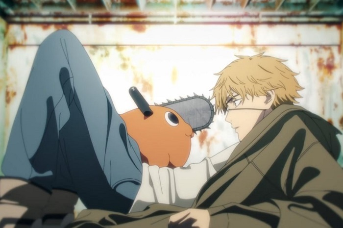

Hal-hal yang perlu kalian ketahui dari anime Chainsaw Man
Informasi untuk penggemar Anime!
Anime Chainsaw Man telah menjadi salah satu serial
yang sangat dinantikan. Dengan gergaji mesin dan gerombolan devil,
seri ini pasti akan menjadi hit bagi para penggemar genre komedi
horor. Inilah semua yang perlu kalian ketahui tentang anime
Chainsaw Man.
Intro
Chainsaw Man adalah serial manga komedi horor yang
ditulis dan diilustrasikan oleh Tatsuki Fujimoto. Anime
Chainsaw Man yang tayang pada Oktober 2022 silam
merupakan salah satu seri yang sudah ditunggu-tunggu banyak orang.
Anime tersebut diadaptasi dari komik berjudul sama karya Tatsuki
Fujimoto yang sudah memiliki nama tersendiri dan memenangkan banyak
penghargaan, bahkan sering kali diajukan pembaca sebagai rekomendasi
komik yang sangat ingin mereka baca dalam bahasa Indonesia.
Sinopsis

Anime ini bercerita tentang Denji, seorang pemuda miskin yang
terpaksa bekerja sebagai Devil Hunter sejak kecil demi melunasi
utang mendiang orang tuanya. Suatu hari, Denji bertemu Chainsaw
Devil yang terluka. Demi menolongnya, Denji kecil memberikan
darahnya dan menjalin kontrak dengan devil tersebut, yang akhirnya
dia pelihara dan dinamakan Pochita. Sejak saat itu, mereka berdua
terus memburu devil demi upah yang tak seberapa. Suatu hari, Denji
dikhianati oleh yakuza yang merekrutnya. Dalam insiden itu, keduanya
terbunuh. Namun, berkat Pochita yang memberikan jantungnya kepada
Denji, pemuda itu bangkit kembali. Dengan menarik tali yang ada di
dadanya, kini Denji bisa berubah menjadi “Chainsaw Man”. Setelah menumpas si pembunuh, dia bertemu Makima, seorang Devil
Hunter dari Pasukan Polisi Rahasia. Gadis itu menjadikan Denji
“peliharannya” dan mengajaknya bergabung dengan mereka. Dari sanalah
kehidupan baru Denji dimulai.
Karakter
Berikut adalah definisi singkat dari karakter anime ini.
KARAKTER
DESKRIPSI
Denji
Seorang pemburu iblis tertindas yang mendapat kesempatan
kedua dalam hidup sebagai Manusia Gergaji misterius
Pochita
Anjing iblis setia yang bergabung dengan Denji untuk
menyelamatkan hidupnya
Power
Seorang anggota regu Makima yang juga seorang Blood Fiend
dengan sepasang tanduk yang mencolok
Aki Hayakawa
Seorang bawahan Makima dan rekan Denji yang memiliki jambul
dan tidak menyukai Fiends
Makima
Kepala Divisi Keamanan Publik 4 yang menerima Denji setelah
dia menjadi satu dengan Pochita